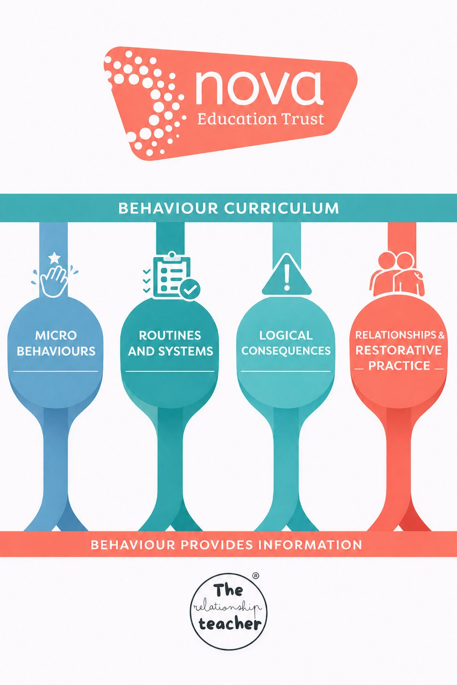
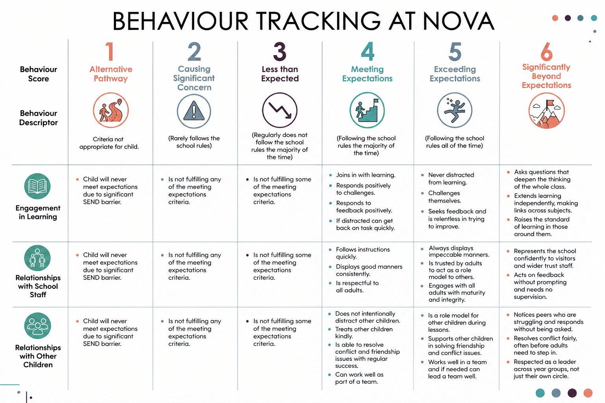
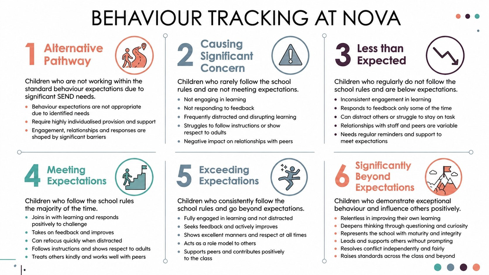

The Nova Primary Behaviour Playbook. Behaviour provides information. Our curriculum equips children to meet and exceed expectations.
The Primary Behaviour Playbook is built around this model. Lucy Potts supports schools in implementing the Behaviour Playbook and Curriculum consistently through on-site support, QA and training.
Behaviour provides information. We read behaviour as data about a child’s needs, relationships and engagement — not simply as compliance to be managed. In-depth guidance, CPD and resources are provided for each strand.

We track a summative assessment of children’s behaviour through Tracker+ with a numerical value relating to the descriptors below. A child cannot be meeting expectations overall if they are not meeting expectations in any sub-category.
Children not working within standard behaviour expectations due to significant SEND needs. Expectations are not appropriate due to identified needs; require highly individualised provision.
Rarely follows school rules. Not engaging in learning, not responding to feedback, frequently distracted and disrupting, negative impact on peer relationships.
Regularly does not follow rules. Inconsistent engagement, responds to feedback only some of the time, can distract others, relationships with staff and peers variable.
Follows school rules the majority of the time. Joins in with learning, responds positively to challenge, takes on feedback, can refocus quickly, treats others kindly.
Consistently follows rules and goes beyond. Fully engaged, seeks feedback and actively improves, excellent manners, acts as a role model, supports peers positively.
Exceptional behaviour that influences others positively. Relentless in improving own learning, deepens thinking, represents the school, resolves conflict independently, raises standards.
Each score is assessed across three behavioural strands. The high-resolution tracking matrix below shows the full descriptor for each score in each strand.

